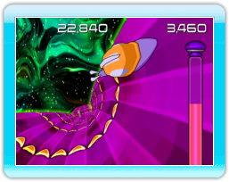

Welcome to Snail Mail,
the racing game for WiiWare.
As Turbo the Snail, your
goal is to collect intergalactic mail while navigating through
increasingly difficult delivery routes.
The delivery routes will
become more complicated as you progress through the game. They become
more elaborate with twists and turns, dips and gaps, drops, jumps,
flips, and spirals. You will also encounter more obstacles like Slugs,
Salt, Asteroids, and Turrets.
Weapons
Turbo is equipped with a standard Pulse Blaster to destroy Asteroids in
his path, but you can upgrade it by jumping through the White Rings
that are present on each track. Weapon upgrades improve the blaster's
firing speed and homing ability, and other upgrades allow Turbo to
destroy Slugs or become invincible. Weapon upgrades are explained
in the "Weapons Upgrades" section.
Playing Modes
There are five playing modes in Snail Mail: Adventure, Co-Op Adventure,
Time Trial, Challenge Mode, and Multiplayer (up to 4 players). Playing
modes are explained in the "Playing Modes" section.
Tutorial
Play the brief tutorial in the Main Menu to learn how to navigate
Turbo, avoid obstacles, destroy enemies and get power-ups.
Controls
Snail Mail can be played with a Wii Remote or Wii Wheel. When playing
with a Wii Remote, twist the Wii Remote to steer and press the A Button
to fire. When playing with a Wii Wheel, turn naturally to steer and
press the 2 Button to fire. You may press and hold the fire buttons for
continuous fire.